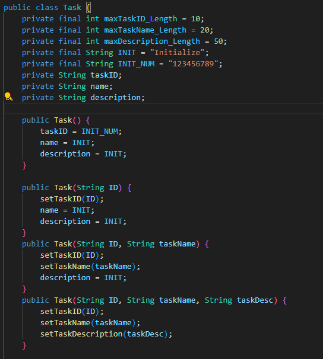

Welcome
Hello! My name is Kenneth Fancher, and I am an aspiring Software Developer. I am currently studying Computer Science at Southern New Hampshire University(SNHU). This portfolio represents my journey as a developer and showcases my skills and projects. The following project exemplifies my growth and development as a developer through my most complete project to date.
Table of Contents
- Professional Self-Assessment
- Refinement Plan and Code Review
- Project Before
- Project After
- Reflections
Professional Self-Assessment
Introduction to Skillset
I began my journey as a developer back in 2021, when I enrolled in
Southern New Hampshire University(SNHU). While in this program, I
have learned a plethora of concepts and skills that have aided me as
a person, and a developer. Such things as being cautious, organzied,
and detail-oriented have been key to my success in this program and
in my life as a whole.
The program has helped shaped who I want to be as a developer by
exposing me to a variety of languages and concepts, allowing me to
find my niche in the field and help develop my passion for computers
and the tech field. This Portfolio has allowed me to specifically
showcase my skills with C++ and learning new frameworks with Qt.
CS465, Fullstack Development, and CS340, Client Server Development,
were classes that allowed me to become more practiced and
comfortable with database implementation and maintenance. I was able
to garner a more complete understanding of how databases work and
how to implement them in a variety of ways. Securing data and
ensuring that it is safe and secure is a key aspect of the tech
field and I am glad to have learned these skills, as they were
rather vital to this project and my growth as a developer. All of
this was paied with proper security measures and ensuring that the
data was safe and secure. Proper data security is vital to
protecting the data of the users and ensuring that it is not
compromised in any way.
CS300, Data Structures and Algorithms, was instrumental in my
understand of Data Structures and Algorithms. The class allowed me
to understand how to implement and use data structures and
algorithms in a variety of ways that were both efficient and
effective. I was introduced to many concepts such as linked lists,
stacks, queues, and trees, as well as searching and sorting
algorithms.
CS250, Software Development Lifecycle, was a class that taught me
how to properly integrate in a team and work on a project from start
to finish. This showing the importance of proper planning and
organization in a project and how to properly implement and maintain
a project, alongside other developers. This class also helped teach
me how to properly illustate and communicate with stakeholders on
meetable metrics and goals for the project.
Introduction to Project
The artefact that we chose to represent was a Contact Application,
it was composed of some simple Java classes that were created as a
"cookie cutter" beginning of the project. It's initial design was
for a Command Line Interface application that was simple and easy to
use. The goal was for it to allow a user to Create and manage
contacts, Tasks, and Appointments.
We aspired to take this and make it into a full fledged application
that would allow for a user to manage all of the same things, but
with actual functionality that the first iteration did not have. All
fo this also coming with a GUI that would allow for a user to
interact with the application in a more user friendly way,
understandable way.
This GUI will be created through the use of the Qt framework, with
C++
Refinement Plan and Code Review
The following videos are a code review of the initial Java classes that were created for the project. The videos will show the initial state of the project and the shortcomings that were present in the initial design.
Code Review Video - Initial Iteration
Video 1: Initial Java Classes
Highlighted Project
Before
Notes
The above images show the state of the initial Java class creation and the extent of what was represented in the initial design. As noted in the code review, this is missing a lot of functionality and is not a complete project, which is why we selected this. I felt this would be the best example of my skills and growth as a developer, to take a project that was not near complete and make it into a full fledged application.
Software Design and Engineering Narrative
This project was designed to be the starting classes of a
Contact Application, it is made in Java and was crafted when I
was in CS320.
This was included because I felt it would be good for showcasing
my ability to take a project and improve its overall design. The
goal was to turn this into a fully interactive application and
we have done that through giving this a working GUI and
completely moving it over to C++. This equipped me to learn new
techniques, and master old ones, such as
Model-View-Controller(MVC) pattern , dynamic content updating,
event handling, and custom widget usage. This process also
required constant testing and debugging and design prowess to
implement.
Algorithms and Data Structure Narrative
This project was designed to be a simple contact application that would allow for a user to manage contacts, tasks, and appointments. This was included because it was a project that was not complete and needed to be improved upon. This project required the use of data structures and algorithms to properly implement the functionality that was desired. To complete the need for searching, we implemented a custom algorithm to allow for us to search through substrings of object names, or dates, to find matching elements for the user. This allows for us to return any thing resembling the search query, instead of returning only items that match the search query exactly. C++ does come with sorting methods built in but we also implemented our own sorting algorithm to allow for a representation of our ability to implement algorithms and data structures.
Databases Narrative
This improvement was added to allow for the user to have data be stored in a way that takes the load off of the on board memory for the computer. This allows for the user to have a larger amount of data stored in the application and not have to worry about constantly having the application open to keep the data. Our application does not have any network capabilities, and is all hosted locally, so we did not need to utilize a more advanced method of database storage, we were able use SQLite to store the data locally on the computer. This allowed for us to have a database that was easy to implement and use.
After
The above illustrates the new login page.
The above illustrates the new home screen.
The above illustrates the new add contacts page.
The above illustrates the new add appointment page.
The above illustrates the new add task page.
The above illustrates the new show contacts page.
The above illustrates the new show appointments page.
The above illustrates the new show tasks page.
Improvement Narrative
The above is the culmination of the project, a fully interactive
contact application. This was probably the most complete project
I have created to date, this takes all the pieces of a compelete
piece of Software and puts them together in a way that is
somewhat intuitive and easy to use.
I would assert that there are certainly areas for improvement
still, such as the design of the application, and the overall
functionality of the application but this is a good starting
point for me to continue to grow and develop as a developer. The
difference between the starting artefact and this product is
miles in terms of functionality and design. I, as a developer,
have grown in the same manner. Learning Qt was a challenge, as I
had no prior knowledge before this project, but I was able to
learn and implement it in an easy to digest and use way.
All of our goals were met in this project, as we were able to
utilize a database for storing user data, the Software Design
and Engineering were overhauled and given a much more pleaseing
look, and the Algorithms and Data Structures were implemented in
a way that allowed for the user to have a more intuitive
experience for searching and sorting through their data.
Reflections
This project was a milestone for me as a developer, it was the first
project I took from beginning to (early version) end. There will
always be more progress but this is a project that has reached it's
1.0.0 version. The process for this project was more than just
syntax conversion; it involved many late nights of learning a new
framework and designing a whole application. Our Contact Application
allowed me to further enhance my skills with memory allocation,
pointer management, and low-level programming.
I am a better developer because of this.
Learning the Qt Framework was a critical challenege for this project
to get off the ground. I had no prior knowledge of the framework
before this project and had to learn it from the ground up. The
reward was well worth the challenge, despite the mistakes and
misdesigns that I had to correct along the way.
Overall, this project is my current cornerstone for development. My
technical skills have grown, and so has my ability to learn. The
challenges faced, and overcome, have equipped me with the tools to
take on new challenges and projects in the future.